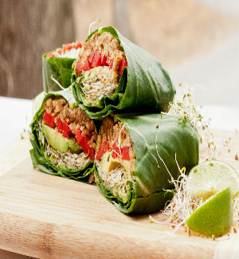
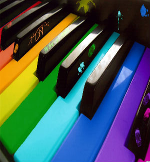

Contact Me


A work in progress. This app allows music lovers to learn languages through songs. Users can search by languages and genres, and can listen to a song while looking at the lyrics and translation.
Using the Instagram API to showcase recently uploaded photos tagged with 'lighthouse'. Surprising lack of actual lighthouse photos, and a ton of people showing off their new lighthouse tattoos :D
A basic map of my most recommended vegan restaurants on Commercial Drive, using Google Maps API.
I'd like to experiment with the APIs of some of my favourite music apps (Rdio, Last.fm) to create more music related apps and improve or add to their already existing features. I really enjoy the thought of playing up the social aspect of music, especially when it comes to meeting new people through shared music interests or finding concert buddies.
I'd also like to continue exploring ways for language learners to become fluent in other languages in more creative and enjoyable ways. Right now I'm focusing on learning languages through music, but would like to expand that to include other arts and media.